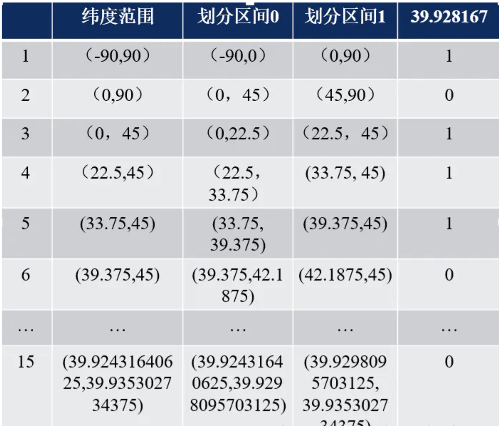
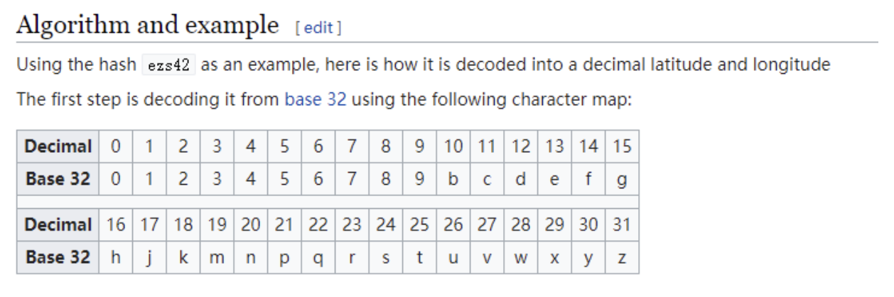

GEO算法
GeoHash是一种地址编码方法。将二维的空间经纬度数据编码成一个字符串；
地球上的经度范围：[-180， 180]，纬度范围：[-90，90]。如果以本初子午线、赤道为界，地球可以分成4个部分。
我们先将平面切割成四个正方形，然后用简单的 01 编码来标识这个四个正方形，最后按照编码的大小将四个正方形连接起来，这样整个平面就转换成了一条Z曲线，变成了一维。
我们递归对每个正方形做同样的操作，递归的层次越深，整个平面就逐渐被Z曲线填充。我们的点也会落在每个小正方形里面，小正方形越小，精度就越高。如下图所示:
第一步： 经纬度转二进制
比如这样一个点（39.923201, 116.390705）
在区间内就是1，否则就是0
依次计算得到二进制数：
39.923201 => 10111000110001111001 |
第二步： 经纬度合并
经度占偶数位，纬度占奇数位，注意，0也是偶数位。
11100 11101 00100 01111 00000 01101 01011 00001 |
第三步： Base32编码
二进制=>十进制=>进行编码即可
wx4g0ec1ebpf
可以在这个网址互相转换，http://geohash.co/；
注意
geohash
- GeoHash表示的并不是一个点，而是一个矩形区域
- GeoHash编码的前缀可以表示更大的区域。例如wx4g0ec1，它的前缀wx4g0e表示包含编码wx4g0ec1在内的更大范围。 这个特性可以用于附近地点搜索
- 编码越长，表示的范围越小，位置也越精确
边缘问题
如图，如果车在红点位置，区域内还有一个黄点。相邻区域内的绿点明显离红点更近。但因为黄点的编码和红点一样，最终找到的将是黄点。这就有问题了。
要解决这个问题，很简单，只要再查找周边8个区域内的点，对比距离即可
曲线突变问题
其中0111和1000两个编码非常相近，但它们的实际距离确很远。所以编码相近的两个单位，并不一定真实距离很近，这需要实际计算两个点的距离才行。
iordis代码实现
|
4附近的人 git:(main) ✗ ts-node index.ts |
# GEOADD: 添加位置 hset结构 |